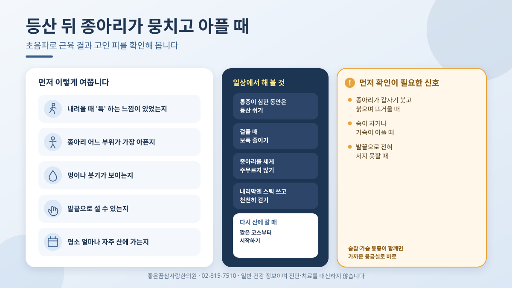

등산 뒤 종아리가 뭉치고 아프면 초음파로 근육 결의 변화나 고인 피가 있는지 확인해 볼 수 있으며, 종아리가 갑자기 붓고 붉어지거나 숨이 차면 먼저 응급 확인이 필요합니다.
여쭙는 것
- 산에서 내려올 때 '툭' 하는 느낌이 있었나요?
- 종아리 어느 부위가 가장 아픈가요?
- 멍이나 붓기가 보이나요?
생활에서 해 볼 것
- 통증이 심한 동안은 등산을 쉬기
- 걸을 때 보폭을 줄이기
- 종아리를 세게 주무르지 않기
한의원에서 함께 살필 것
- 종아리 통증이 이어지는 경우 필요하다고 판단되면 초음파로 근육 상태를 확인합니다.
- 근육이 놀란 정도에 맞춰 침, 온열 등을 검토하고 운동 재개 시기를 함께 정합니다.
- 다른 검사가 필요하다고 판단되면 다른 의료기관을 안내합니다.
먼저 확인이 필요한 신호
- 종아리가 갑자기 붓고 붉으며 뜨거운 경우
- 숨이 차거나 가슴이 아픈 경우
- 발끝으로 전혀 서지 못하는 경우

등산 뒤 종아리가 뭉치고 아플 때 초음파로는 근육 결이 흐트러졌는지, 근육 사이에 피가 고였는지 같은 상태를 확인해 볼 수 있습니다. 관악산이나 국사봉 산책로를 다녀온 뒤 며칠째 종아리가 딴딴하고 아프다는 분들이 있습니다. 대부분은 쉬면서 나아지지만, 산에서 '툭' 하는 느낌이 있었다면 더 자세히 살펴야 합니다.
왜 이런 불편이 생길 수 있나요
- 내리막을 걸을 때 종아리 근육은 늘어나면서 몸을 받쳐 주는 브레이크 역할을 해, 평소보다 큰 부담을 받습니다.
- 평소 걷지 않던 거리를 한 번에 걸으면 다음 날부터 이틀쯤 근육이 뻐근해지는 경우가 많습니다.
- 갑자기 힘을 주는 순간 '툭' 하는 느낌이 있었다면 근육 일부가 손상됐을 가능성도 있어 구분이 필요합니다.
- 종아리 붓기와 통증은 드물게 혈관 문제와도 관련될 수 있어 위험 신호를 꼭 확인합니다.

먼저 이렇게 여쭙니다
- 산에서 내려올 때 '툭' 하는 느낌이 있었나요?
- 종아리 어느 부위가 가장 아픈가요?
- 멍이나 붓기가 보이나요?
- 발끝으로 서는 것이 가능한가요?
- 평소 얼마나 자주 산에 가시나요?
일상에서 먼저 해 볼 수 있는 것
- 통증이 심한 동안은 등산을 쉬기
- 걸을 때 보폭을 줄이기
- 종아리를 세게 주무르지 않기
- 내리막에서는 스틱을 쓰고 천천히 걷기
- 다시 산에 갈 때는 짧은 코스부터 시작하기

한의원에서 함께 살필 수 있는 경우
- 종아리 통증이 이어지는 경우 필요하다고 판단되면 초음파로 근육 상태를 확인합니다.
- 근육이 놀란 정도에 맞춰 침, 온열 등을 검토하고 운동 재개 시기를 함께 정합니다.
- 다른 검사가 필요하다고 판단되면 다른 의료기관을 안내합니다.
좋은꿈참사랑한의원에서는 먼저 산에서 있었던 일과 아픈 부위, 걷는 모습을 충분히 듣고 확인합니다. 필요하다고 판단될 때 초음파로 아픈 근육 부위를 화면에 띄워 함께 보며 설명드리고, 상태에 따라 침, 약침, 온열 가운데 맞는 방법을 정합니다. 귀가 전에는 다시 산에 가도 되는 시점을 판단할 기준과 그동안 할 수 있는 가벼운 움직임을 알려 드립니다.
이렇게 기록해 오시면 상담이 쉬워집니다
- 다녀온 산과 코스, 걸린 시간
- 통증이 시작된 순간(산행 중, 그날 저녁, 다음 날)
- 멍이나 붓기가 생긴 날과 범위(사진)
- 계단 오르내리기, 발끝 서기가 되는지

이런 증상은 먼저 확인이 필요합니다
- 종아리가 갑자기 붓고 붉으며 뜨거운 경우
- 숨이 차거나 가슴이 아픈 경우
- 발끝으로 전혀 서지 못하는 경우
종아리가 붓고 숨이 차거나 가슴이 아프면 응급실이나 119로 바로 확인하셔야 합니다. 초음파는 진찰 중 필요하다고 판단될 때 확인하는 방법이며, 뼈 속이나 깊은 부위처럼 초음파로 보기 어려운 곳은 다른 의료기관 검사를 안내해 드릴 수 있습니다.
한눈에 보는 표
| 구분 | 핵심 |
|---|---|
| 여쭙는 것 | 산에서 내려올 때 '툭' 하는 느낌이 있었나요? 종아리 어느 부위가 가장 아픈가요? |
| 생활에서 해 볼 것 | 통증이 심한 동안은 등산을 쉬기 걸을 때 보폭을 줄이기 |
| 한의원에서 함께 살필 것 | 종아리 통증이 이어지는 경우 필요하다고 판단되면 초음파로 근육 상태를 확인합니다. 근육이 놀란 정도에 맞춰 침, 온열 등을 검토하고 운동 재개 시기를 함께 정합니다. |
| 먼저 확인이 필요한 신호 | 종아리가 갑자기 붓고 붉으며 뜨거운 경우 숨이 차거나 가슴이 아픈 경우 |
자주 묻는 질문
근육이 찢어졌는지 초음파로 알 수 있나요?
근육 결의 변화나 고인 피를 확인하는 데 도움이 되지만, 경우에 따라 다른 검사가 필요할 수 있습니다.
언제부터 다시 등산해도 되나요?
통증과 걷는 모습을 보고 함께 정합니다.
찜질은 차갑게 하나요, 따뜻하게 하나요?
갑자기 붓고 열감이 있을 때는 차갑게, 붓기 없이 뻐근할 때는 따뜻하게 하는 편이 일반적입니다. 헷갈리면 진료 때 여쭤보세요.
진료 시간은 어떻게 되나요?
좋은꿈참사랑한의원은 평일 09:30~20:00(점심 13:00~14:00), 토·일·공휴일 09:30~15:00에 진료합니다.
이 글은 일반적인 건강 정보이며 개인의 진단이나 치료를 대신하지 않습니다. 증상이 있거나 복용 중인 약이 있다면 진료를 통해 확인하세요. 치료 효과는 개인마다 다를 수 있습니다.
작성 기준: 일반적으로 알려져 있는 건강 정보를 참고해 정리했습니다(대표원장 감수). 증상 기록은 1~2주 동안 하루 1회, 비슷한 시간에 적어 오시면 지난 상태와 비교하기 쉽습니다.
좋은꿈참사랑한의원은 재진 때 지난번 이야기부터 이어서 여쭙니다. 진료시간과 예약은 오시는 길에서 확인하세요.